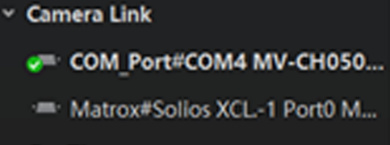

添加Camera Link相机
由于Camera Link相机刷新耗时较长，故客户端不支持自动刷新Camera Link接口。添加Camera Link相机需要你手动刷新并连接。
Camera Link相机正常连接，且Camera Link采集卡驱动安装正确。
-
点击设备列表Camera Link接口右侧的
 进行手动刷新。
说明：
进行手动刷新。
说明：Camera Link相机刷新耗时较长，此为正常现象。
若相机连接正常，Camera Link下方会显示可搜索到的相机，如下图所示。
 图 1 枚举Camera Link相机说明：客户端枚举Camera Link相机时通过串口和采集卡会枚举两次，此为正常现象。